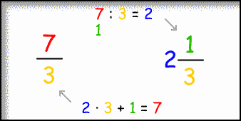
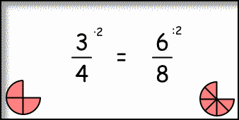
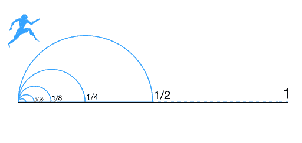

Números racionales
Buenos días, visitante de este sitio. El tema que traigo hoy es un repaso de los números racionales.
Aunque seguramente ya has visto esta materia, estoy seguro de que aquí aprenderás alguna nueva curiosidad.
Sin más preámbulo, empecemos:
¿Qué son?
Los números racionales son todo número que puede ser expresado como una división entre dos enteros. Hay 3 formas de representarlos:

- Fracción: El dividendo se llamará numerador y se escribe arriba de una barra central. El divisor se llama denominador y se escribe abajo. Existen tres tipos de fracciones:
- Propia: Cuando el numerador es menor que el denominador.
- Impropia: Cuando el numerador excede al denominador.
- Igual a la unidad: Cuando el numerador es igual al denominador.
- Número mixto: Un número mixto es la suma de una fracción propia y un número entero.
- Decimal: Se obtiene al dividir el numerador con el denominador. Estas son sus partes:
- Parte entera: Va antes de la coma.
- Parte decimal: Va después de la coma.
- Periodo: Cifras de la parte decimal que se repiten infinitamente. Solo se escribe una vez, con un vinculum o arco encima.
- Anterperiodo: Son cifras de la parte decimal que no se repiten y preceden al periodo.
Transformaciones
Podemos transformar fracciones impropias a número mixto y viceversa con facilidad:

- Fracción impropia a n° mixto: El cociente es la parte entera y el resto el numerador.
- N° mixto a fracción impropia: El numerador es el producto entre la parte entera y el denominador más el numerador.
- En ambos casos el denominador se mantiene igual.
También es fácil transformar fracciones a número decimal, simplemente dividimos el numerador con el denominador y luego sumamos la parte entera.
Sin embargo, el caso contrario es más difícil. Les traje una tabla explicativa para que no se les olvide:
Operaciones
En esta sección recordaremos cómo se hacen las cuatro operaciones básicas entre estos números. Pero primero, veremos dos métodos que nos entregan la misma fracción pero de distinta manera.
Simplificar y amplificar
Si multiplicamos ambas partes de una fracción por el mismo número (amplificación), el resultado representará el mismo número. Lo mismo pasa si las dividimos (simplificación).

Lo máximo que podremos simplificar es dividiendo por el máximo común divisor, lo que nos entregará una fracción irreductible. Siempre hay que simplificar al final.
Cuatro operaciones
Para sumar y restar fracciones, estas deben tener un denominador común. Cumplido esto, simplemente se suma o resta el numerador y se conserva el denominador.
En el caso de no cumplirse esta condición, podemos multiplicar los denominadores entre sí y en el numerador sumar los números extremos con los medios:

Para multiplicar en cambio, simplemente debemos multiplicar los numeradores y los denominadores.
Finalmente para dividir, debemos multiplicar el dividendo por el recíproco del divisor (invertimos verticalmente la segunda fracción y multiplicamos en vez de dividir).
En el caso de tener números enteros, estos se deben expresar como n : 1.
Orden
Para ordenar dos fracciones, simplemente debemos comparar sus extremos y medios.

Ubicación
- La parte entera de la fracción indica la unidad donde iniciaremos nuestro conteo.
- El denominador indica en cuántas partes iguales se dividirá esta unidad.
- El numerador indica cuántas partes contaremos.

Densidad
Dejé para el último la propiedad más interesante.
Esta propiedad de los números racionales indica que entre dos números racionales siempre hay otro. Por más que dividas el número, nunca llegarás a cero.

Bueno, espero que de este compendio de información logres rescatar algo y esto mejore tu vida.
Si ya sabías todo esto, ¡por favor devuelve el favor enseñándole a los demás!
Eso es todo por hoy, nos vemos.